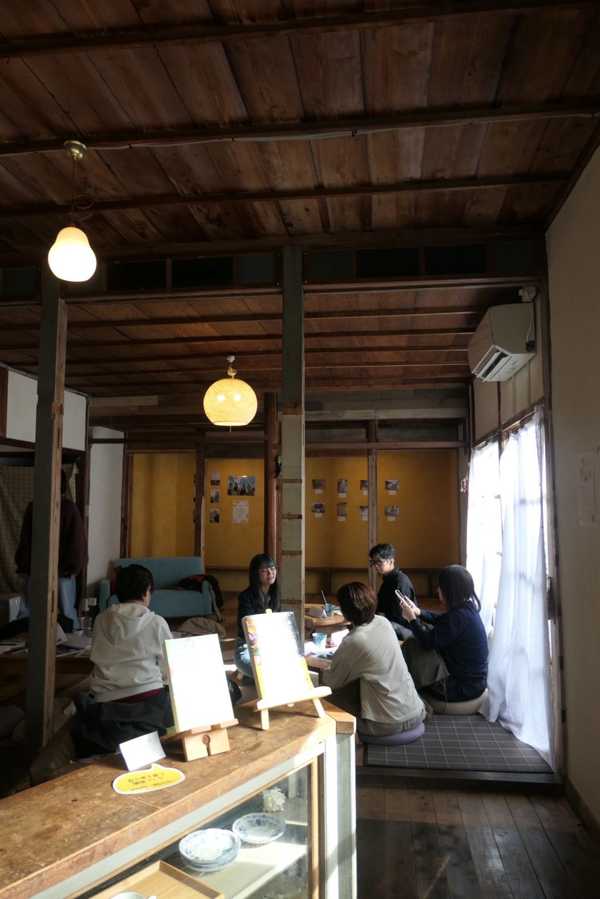

SNS
地域コミュニティ×
地域コミュニティ×
SNS活用講座
〜 発信・投稿のコツ 〜（全5回）

SNS — SNS活用講座
地域コミュニティ×SNS活用
- 講師：
- KENTOさん（en.undertemple 代表）
- 日程：
- 各回 金曜日
- 時間：
- 10:00〜12:00 講座 ＋ 12:00〜14:00 ランチ＆フリータイム
地域のことを発信するための、SNSの発信・投稿のコツを学ぶ全5回の講座です。講座のあとは、ランチを食べながら参加者どうしでゆっくり話せるフリータイムがあります。
- 参加費
- 3,000円ランチ料込み・各回
- 定員
- 7名要予約
- 会場
- くつろぎ自由研究室河南町寛弘寺422-7
FLOW 1日の流れ
-
10:00
講座
KENTOさんから、その回のテーマについて教わります。
-
12:00
ランチ＆フリータイム
ランチを食べながら、参加者どうしでゆっくり過ごします。
-
14:00
おわり
VOICES 参加者の声
ほかの企画も見る